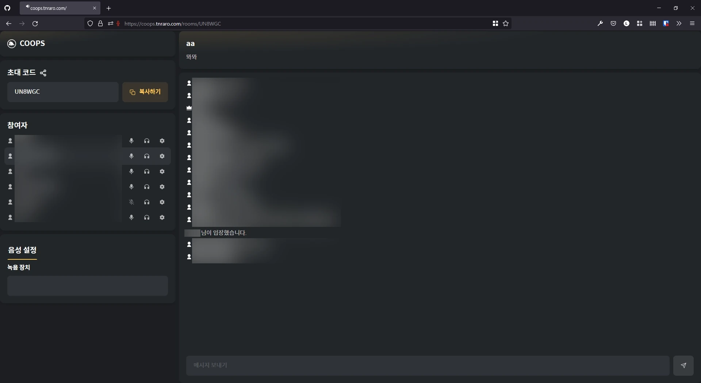
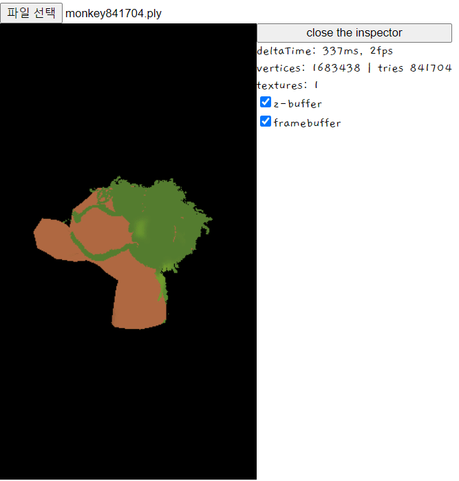

양호진
프로젝트

- 게이머를 위한 익명 음성 채팅 서비스
- 레이드, 랜덤 팀 매치 등 일시적으로 맺는 협력 관계에서 익명성으로 개인정보 유출을 최소화할 수 있는 간편한 음성 채팅 서비스
- 웹 디자인과 개발을 담당
- Figma로 디자인
- 초기에 chakra-ui로 스타일링 했으나, 테마와 컴포넌트를 제한적으로 쓸 수 있고, TypeScript 친화적이지 않아서 stitches로 변경
- 훌륭한 타입 지원, variant, DX로 생산성 향상
- Next.js 커스텀 서버 없이는 SSE를 사용할 수 없어서, Node.js로 SSE 서버 구현
- 서버가 나뉘면서 같은 코드를 공유해야 하는 일이 생겨 모노레포 도입
- jotai로 상태 관리
- REST API와 SSE, Redis의 pub/sub으로 실시간 채팅 및 방 제어 기능 구현
- AWS EC2 위에 도커를 띄워서 2개월간 운영
- 가족 중 IoT 기기의 소유자만이 제어할 수 있는 서비스
- 웹 어드민 개발 담당
- 네트워크에 적합한, 짧지만 적은 충돌 가능성을 가지는 ID 구현
- 가족 구성원을 추가, 제외할 수 있는 가상 홈 개발
- IoT 기기 추가, 제거, 소유자 변경, 실시간 제어 기능 개발
- IoT 기기와 통신하기 위해 MQTT 도입
- AWS RDS에 MySQL을 띄워서 상태 관리
- AWS EC2에 도커를 띄워서 3개월간 운영

- 3D 모델을 CPU로 렌더링하는 소프트웨어 래스터라이저를 JavaScript로 구현
- 수학적 원리 학습과 구현을 목표로 한 개인 프로젝트
- 삼각형의 각 정점을 질량 중심 좌표계로 보간하여 색을 채우는 래스터라이저 구현
- 3D 모델 파일인 OBJ와 PLY를 불러올 수 있는 로더 구현
- 폴리곤을 입력받았을 때 동적으로 삼각형으로 자르는 기능 구현
- 3D 모델에 입힐 텍스처 로더 구현
- z 버퍼를 추가하여 어떤 삼각형이 앞에 있는지 결정할 수 있는 z culling 구현
- 코드 최적화로 4만 개가량의 정점을 40ms 내외로, 백만 개가량의 정점을 300ms 내외로 처리
교육
- 경성대학교컴퓨터공학과